Theology (Tech Tree)
This technology tree deals with the church and graveyard. It is unlocked by first meeting the bishop. Through it you can unlock better gravestones and fences for a better  , new items for the church to help you boost its rating and new sermons which give unique bonuses.
, new items for the church to help you boost its rating and new sermons which give unique bonuses.
Faith
This branch is unlocked after completing the bishops quest to raise  to 5. He will give you the preacher perk allowing you to hold sermons in the local church. Further down the tree you are able to craft more sermons.
to 5. He will give you the preacher perk allowing you to hold sermons in the local church. Further down the tree you are able to craft more sermons.
| Technology | Prerequisite tech | Cost | Unlocks | |
|---|---|---|---|---|
| Faith | None | Unlocked by reopening the church | Create: Prayer for faith | |

|
Perk: Preacher | |||
| Light of Faith | Faith | Blueprint: Candelabra I | ||
| Create: Candle (1) | ||||
| Create: Candle (3) | ||||
| Illumination of Faith | Light of Faith | Blueprint: Candelabra II | ||
| Create: Candle (4) | ||||
| Create: Stained glass window | ||||
| Shining of Faith | Illumination of Faith + Superpower of Faith |
Blueprint: Candelabra III | ||
| Comfort of Faith | Faith | Blueprint: Church bench | ||
| Power of Faith | Comfort of Faith | 
|
Blueprint: Confessional | |

|
Blueprint: Wooden church shrine | |||
| Create: Prayer for repentance | ||||
| Softness of Faith | Power of Faith | Blueprint: Soft church bench | ||
| Superpower of Faith | Softness of Faith | Blueprint: Confessional II | ||
| Blueprint: Stone church shrine | ||||
| Smell of Faith | Power of Faith | Blueprint: Incense burner | ||

|
Create: Incense | |||
| Pheromones | Smell of Faith | Blueprint: Incense burner II | ||
| Create: Incense II | ||||
| Business of Faith | Faith | 
|
Create: Flyer | |
| Create: Prayer for prosperity | ||||
| Price of Faith | Business of Faith | Create: Prayer for donations | ||
| Create: Combo prayer | ||||

|
Perk: Cardinal | |||
Graves
Upon arriving to the graveyard for the first time the bishop will ask you to the be the graveyard keeper. You gain access to the technology tree so that you can improve the graveyard to 5  and complete his quest. Unlocking all of these technology's costs a total of
and complete his quest. Unlocking all of these technology's costs a total of  1455,
1455,  155, and
155, and  635 technology points.
635 technology points.
| Technology | Prerequisite tech | Cost | Unlocks | |
|---|---|---|---|---|
| Humble Marker | None | Unlocked by meeting the bishop | 
|
Create: Wooden marker |
| Simple Gravestones | Humble Marker | Create: Wooden grave fence | ||
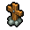 |
Create: Wooden cross | |||
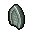 |
Create: Gravestone | |||
| Cremation | Simple Gravestones | 
|
Blueprint: Place for burning corpses | |
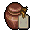 |
Create: Ceramic funeral urn | |||
| Blueprint: Stone columbarium | ||||
| Graveyard Enchancement | Cremation | Blueprint: Wooden prayer station | ||
| Blueprint: Lawn | ||||
| Cremation II | Cremation | 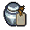 |
Create: Porcelain funeral urn | |

|
Blueprint: Marble columbarium | |||
| Stone Prayer Station | Cremation II | Blueprint: Stone prayer station | ||
| Blueprint: Marble flagstones | ||||

|
Blueprint: Lantern | |||
| Stone Gravestones | Simple Gravestones | Create: Stone grave fence | ||
| Create: Stone cross | ||||
| Create: Gravestone II | ||||
| Carved Gravestones | Stone Gravestones | 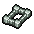 |
Create: Stone grave fence II | |
| Create: Stone cross II | ||||
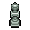 |
Create: Stone plinth | |||
| Grave monuments | Carved gravestones | Create: Stone sculpture | ||
| Create: Stone sculpture II | ||||
| Marble gravestones | Grave Monuments | Create: Marble grave fence | ||
| Create: Marble cross | ||||
| Carved Marble Gravestones | Marble Gravestones | 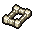 |
Create: Marble grave fence II | |
| Create: Marble cross II | ||||
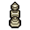 |
Create: Marble plinth | |||
| Crypts | Marble Gravestones | Create: Marble sculpture | ||
| Create: Marble sculpture II | ||||
| Advanced gravestones | Undertaker from Refugee camp (Game of Crone DLC) | Create: Stone grave fence III | ||
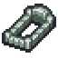 |
Create: Stone grave fence IV | |||
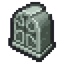 |
Create: Gravestone III | |||
| Advanced gravestones II | Undertaker from Refugee camp (Game of Crone DLC) | 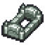 |
Create: Stone grave fence V | |
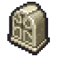 |
Create: Marble gravestone III | |||
| Create: Marble grave fence III | ||||
| Marble Fences | Undertaker from Refugee camp (Game of Crone DLC) | 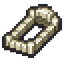 |
Create: Marble grave fence IV | |
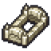 |
Create: Marble grave fence V | |||
| Stone Statues | Undertaker from Refugee camp (Game of Crone DLC) | 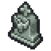 |
Create: Stone sculpture III | |
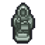 |
Create: Stone sculpture IV | |||
| Marble Statues | Undertaker from Refugee camp (Game of Crone DLC) | 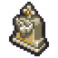 |
Create: Marble sculpture III | |
| Create: Marble sculpture IV | ||||
| |||||